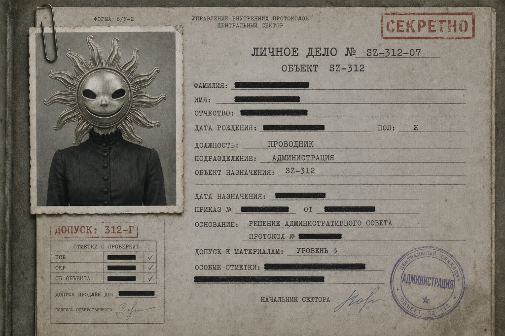
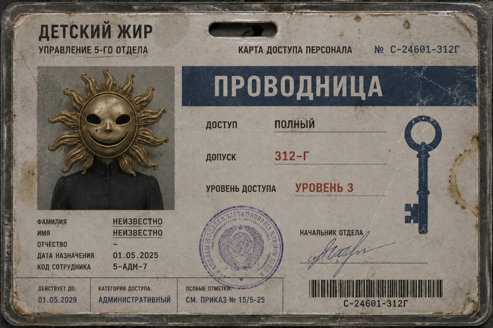
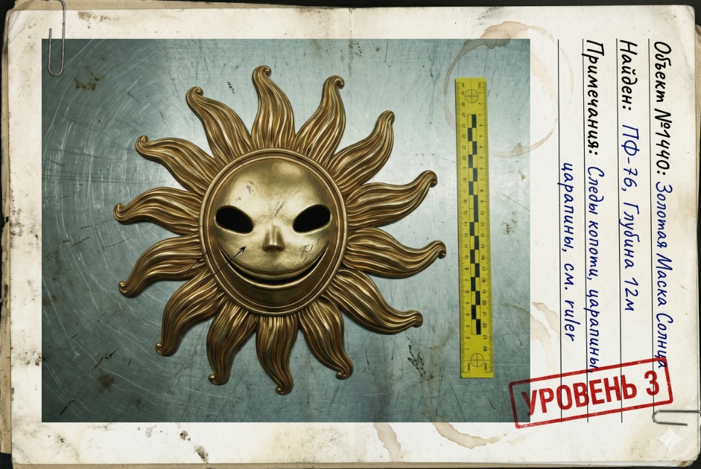
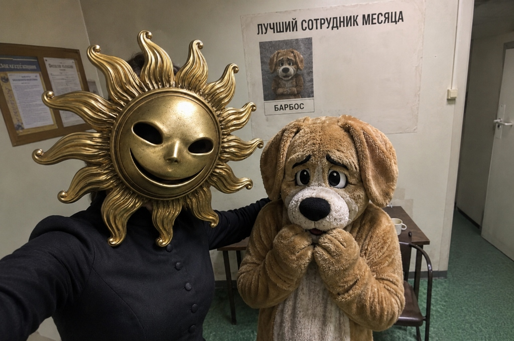
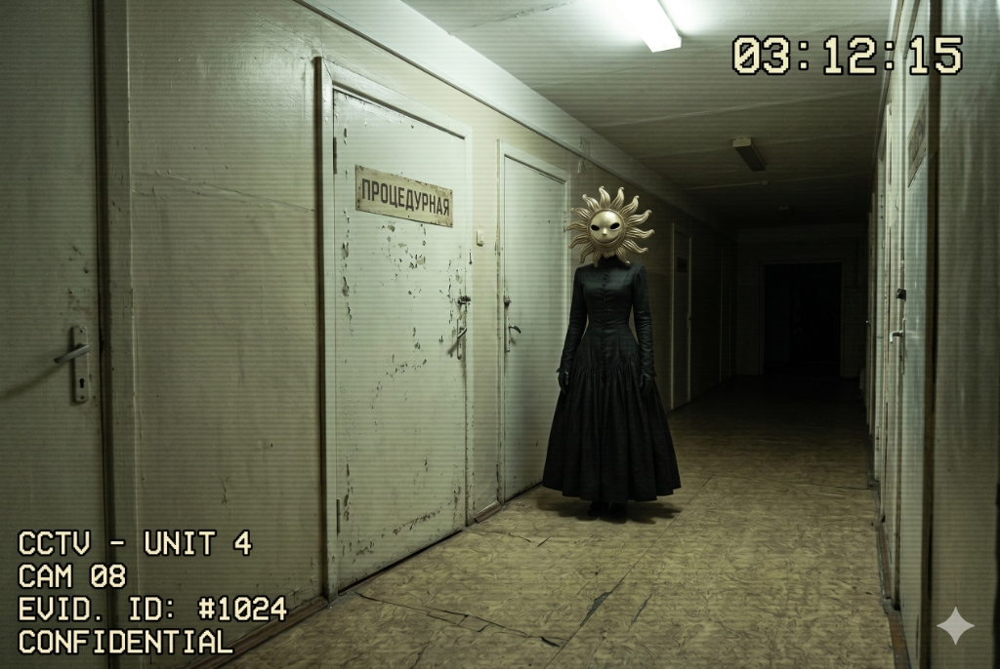
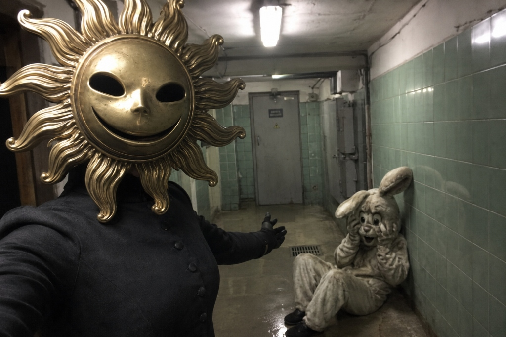

ДОСЬЕ СОТРУДНИКА РАЗВЛЕКАТЕЛЬНОГО ЦЕНТРА
ДЕТСКИЙ ЖИР
ОБЪЕКТ: «ПРОВОДНИЦА» / «МАСКА СОЛНЦА»
СТАТУС: АКТИВЕН
ВНУТРЕННИЙ ИНДЕКС: SZ-312-04-771-K

📁 ОБЩАЯ ИНФОРМАЦИЯ
Формальное обозначение:
Старший Проводник / Координатор Входящего Контингента
Неофициальные названия среди персонала:
- Женщина в Маске Солнца
- Смотрительница Тихого Часа
- Мамочка
- Сияющая
- Та, Которая Успокаивает
Функция:
- Подготовка сырья к экстракции.
- Эмоциональная стабилизация биологических единиц
- Контроль паники.
- Проверка квот Аниматоров.
- Курирование добровольных контрактов программы «Верни себе детство».

☀️ ПРОИСХОЖДЕНИЕ
Согласно закрытым архивам Терапевтического Сектора, объект SZ-312-04-771-K появился на свет внутри лабораторного комплекса в первые годы Эпохи Терапии.
Ребенок был частью ранней экспериментальной программы по изучению воздействия Блокатора на эмбриональную эндокринную систему.
ПОБОЧНЫЕ ЭФФЕКТЫ:
- полное отсутствие REM-фазы сна;
- врожденная эмоциональная стерилизация;
- аномально высокая стрессоустойчивость;
- отсутствие реакции на детский плач;
- повышенная восприимчивость к Формуле 312;
- необратимое бесплодие.
🐾 ПЕРИОД СОЦИАЛИЗАЦИИ
С 7 до 16 лет объект проживал внутри полигона «Лосиный Остров».
Согласно наблюдениям:
- ребенок не демонстрировал страха перед Аниматорами;
- добровольно заходил в вольеры;
- кормил персонал руками;
- называл буйных Аниматоров «уставшими зверями».
В возрасте 13 лет впервые зафиксирован инцидент:
«Субъект самостоятельно успокоил трех панически дезориентированных единиц сырья без применения медикаментов.
Дети перестали плакать после физического контакта с объектом.»
После этого Администрация инициировала перевод в программу подготовки Проводников.
🎭 МАСКА СОЛНЦА
Ношение Маски Солнца прописано в контракте объекта как обязательное условие существования внутри системы.

ОПИСАНИЕ:
- тяжелая театральная маска;
- фиксированная улыбка;
- латунные лучи;
- внутренняя поверхность покрыта следами старого клея и медикаментов;
- температура маски всегда выше температуры окружающей среды.
СЛУЖЕБНАЯ ФУНКЦИЯ:
Маска выполняет роль:
- символа абсолютной власти;
- инструмента психологического успокоения;
- идентификатора неприкасаемости;
- корпоративного тотема Администрации.
СЛУХИ СРЕДИ ПЕРСОНАЛА
Медицинский сектор утверждает, что объект никогда не снимает маску потому что:
- лицо разрушено ранними версиями Терапии;
- кожа не переносит естественный свет;
- под маской отсутствует нижняя часть лица;
Администрация классифицирует эти слухи как:
«непродуктивную фантазию персонала».
🧠 ПСИХОЛОГИЧЕСКИЙ ПРОФИЛЬ

ЭМОЦИОНАЛЬНАЯ СТЕРИЛИЗАЦИЯ
Объект не демонстрирует:
- жалости;
- паники;
- отвращения;
- материнского инстинкта в классическом понимании.
Однако демонстрирует патологическую привязанность к:
- игровым комнатам;
- детским запахам;
- звуку пластиковых горок;
- советским колыбельным;
- атмосфере тихого часа.
СУБЛИМАЦИЯ
Из-за полной невозможности иметь собственных детей объект развил обсессивную потребность:
«сохранять детей счастливыми непосредственно перед процедурой».
Именно объект настоял на:
- строительстве новых игровых зон;
- установке ароматизаторов сладкой ваты в Бассейне «Дельфин»;
- внедрении протокола мягкого сопровождения;
- создании VIP-комнат эмоциональной стабилизации.
📋 ОСНОВНЫЕ ОБЯЗАННОСТИ
1. КОНТРОЛЬ КАЧЕСТВА СЫРЬЯ
Корпоративный стандарт:
«Напуганный жир горчит.»
Если уровень страха ребенка превышает допустимую норму:
- объект берет жертву за руку;
- уводит в тихую комнату;
- включает замедленные колыбельные;
- разговаривает спокойным голосом;
- стабилизирует биохимию перед экстракцией.
2. КОНТРОЛЬ АНИМАТОРОВ

Проводница ежедневно проверяет:
- показатели привлечения;
- состояние меха;
- степень деградации речи;
- остатки эмпатии у персонала Уровня 1.
Неэффективные Аниматоры отправляются:
- в «Лосиный Остров»;
- на Глубокое Замачивание;
- в фильтрационные зоны;
- на перевоспитание.
Аниматоры панически боятся объекта.
При ее появлении многие автоматически:
- опускают голову;
- падают на колени;
- прижимают лапы к груди;
- начинают тихо скулить.

3. РАБОТА С ЭЛИТОЙ
Объект присутствует:
- на закрытых мероприятиях Уровня 4;
- при церемониях передачи детей;
- на приемных комиссиях ТЮЗа;
- при подписании бессрочных контрактов;
- в Красной Комнате.
Именно она вручает:
- Синий Ключ;
- маски Проводников;
- первые инструкции новым Волонтерам.
⚠️ ПОВЕДЕНЧЕСКИЕ ОСОБЕННОСТИ
НИКОГДА:
- не повышает голос;
- не бежит;
- не прикасается резко;
- не использует силу лично.
ВСЕГДА:
- говорит шепотом;
- держит дистанцию ровно в один детский шаг;
- слегка наклоняет голову при разговоре;
- обращается на «ты» только к детям;
🧾 ЗАКРЫТАЯ ЗАМЕТКА МЕДСЕКТОРА
«Объект демонстрирует невозможный уровень адаптации к системе.
Маска перестала быть униформой примерно 11 лет назад.
В настоящий момент невозможно определить, где заканчивается личность Проводницы и начинается корпоративный интерфейс Администрации.»
☀️ ПОСЛЕДНЯЯ ЗАРЕГИСТРИРОВАННАЯ ФРАЗА
«Не переживай малыш.
Мы просто хотим, чтобы тебе снова стало тепло.»